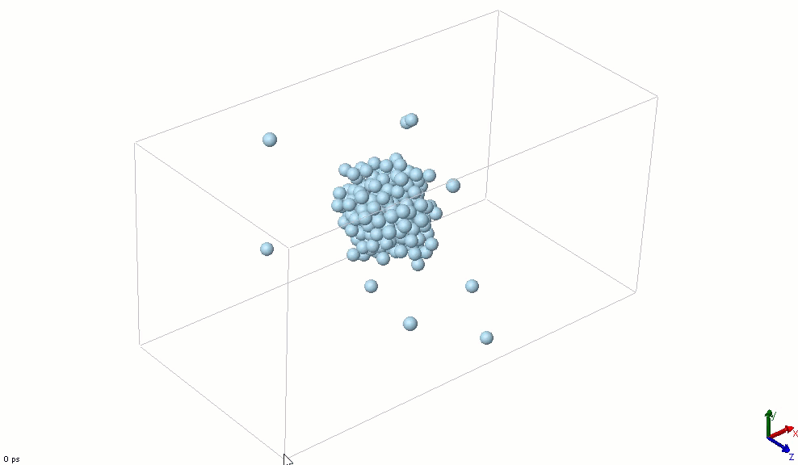
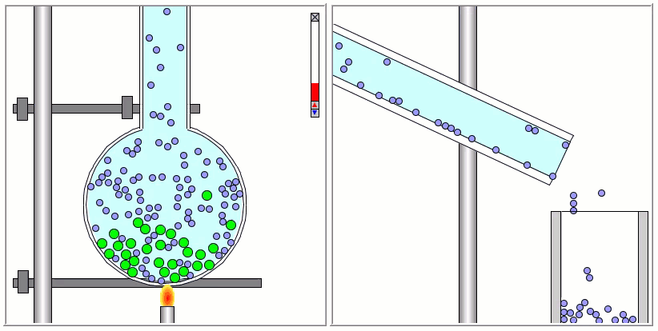
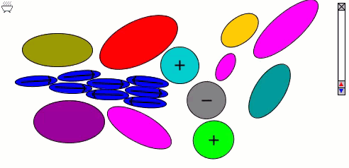
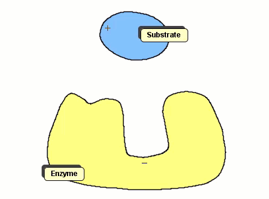
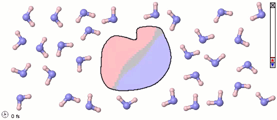

Coarse-Grained Molecular Simulations
By Charles Xie ✉
Coarse-grained molecular simulations are a class of approximation methods for computationally modeling the behavior of complex systems using their simplified representations. Coarse-grained molecular simulations are often used to study large biomolecules or a large ensemble of molecules that would otherwise be intractable using all-atom force-field methods. Depending on the specific situation and goal, a molecule may be represented by a spherical particle, an elliptical particle, or a soft body in an arbitrary shape. For mathematics, I have written an article to describe various approaches that we have developed for coarse-grained modeling to get a concept across with a higher clarity. Because of their lower computational costs, coarse-grained models are being used in our work to demonstrate how artificial intelligence (AI) can be used to speed up material design and drug discovery. For instance, they can be trained using ab initio or experimental data of accurate structures and then used to predict some bulk properties of materials that they model after.
Lennard-Jones Particles
The simplest particle that exhibits basic attractive-repulsive features of intermolecular interactions is probably the Lennard-Jones particle. The following animation shows the transformation of a Lennard-Jones system from a condensed state into a gaseous state. A Lennard-Jones particle can be used to model an inert gas atom, a molecule that can be approximated as a sphere (e.g., a globular protein), or even a macroscopic particle (sometimes called a discrete element when it is used in this way).

The Lennard-Jones particles are useful to create simulations for educational purposes. For instance, we can also use the Lennard-Jones particles to represent solute and solvent molecules. The following simulation shows the process of distillation.

Gay-Berne Particles
The Lennard-Jones particles model only spherical objects. Their interactions with one another depend only on the distance. Gay-Berne particles are a generalization of the Lennard-Jones particles to elliptical shapes, which introduces orientational dependence. The following simulation shows the motions of and interactions among these elliptical particles, with electrostatic forces among charges and dipoles.

Molecular Surfaces
Although the Gay-Berne particles are capable of simulating non-spherical interacting particles, it is limited to modeling only elliptical particles. To build useful coarse-grained models for molecular biology without having to use full ball-and-stick representations of macromolecules, interacting objects that have arbitrary shapes are needed. The following simulation shows a 2D illustration of docking between a substrate and an enzyme. According to p. 93, Molecular Biology of the Cell, by Alberts et. al., "Despite being weakened by water and salt, ionic bonds are very important in biological systems; an enzyme that binds a positively charged substrate will often have a negatively charged amino acid chain at the appropriate place."

Polymers can be represented by rod-shaped molecular surfaces, as shown in the following simulations that compare the thermal resistance between linear and branched polymers. The branched polymer disintegrates more easily when temperature increases.

Mixed Representations for Multiscale Models
We can also mix atomistic representations and coarse-grained representations in a single model. Such a mix may be appropriate for multiscale models. The following image uses a full-atom model for water molecules and a coarse-grained model for a solute molecule. Color shading is applied to show the distribution of electrostatic charges (pink is positive and blue is negative). Note the difference in the orientaiton of water molecules near different parts of the solute molecule.
